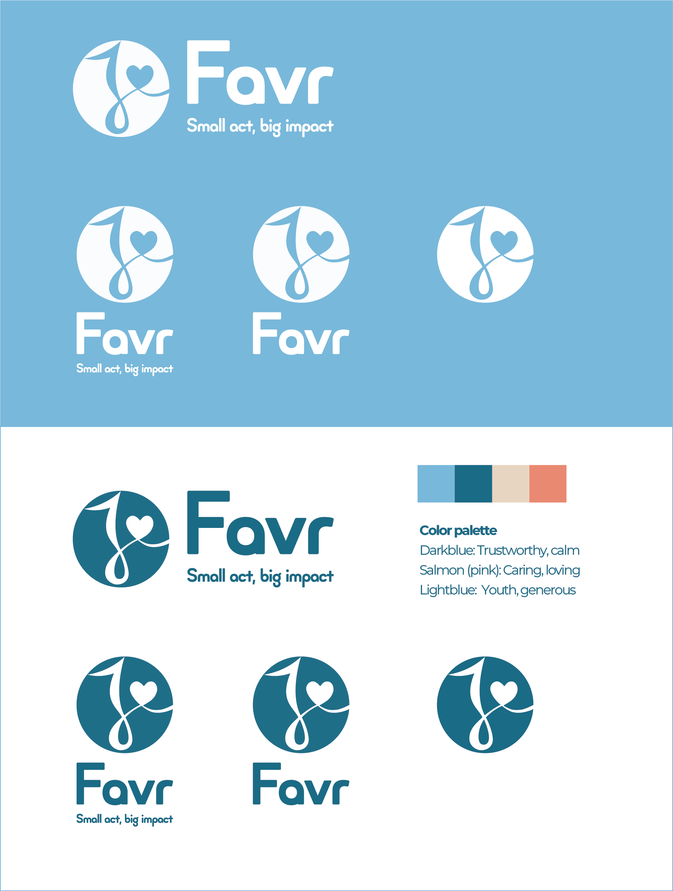
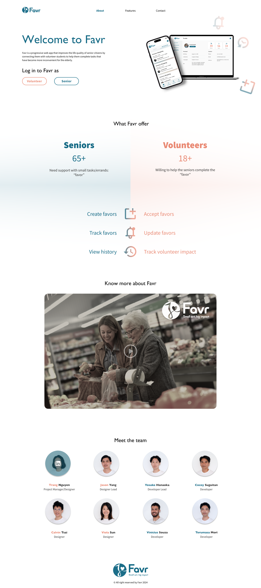

Favr Logo & Landing Page Design
Favr started as a simple idea: make asking for help feel effortless. I designed the brand identity and landing page to reflect that sense of ease and friendliness.
For the Favr logo, I wanted something that instantly feels like a little lift, almost like someone gently saying, “Hey, I’ve got you.” I explored soft curves and rounded corners inspired by the flow of a handwritten “F” in Adobe Illustrator. The final mark combines this script-like F with a small heart, creating a sincere and supportive feeling while keeping the silhouette clean, minimal, and versatile.
Logo Design and Guideline



From there, I extended the visual language into a landing page focused on clarity: simple sections, purposeful typography, and a layout that makes the product’s value instantly understandable. The page focuses on reassurance: calm colors, clear messaging, and layouts that gently guide users to what Favr can help with. It’s a small project, but one that taught me how much storytelling a single page and a single logo can carry when designed intentionally.

This project was a quick exploration of how branding and product storytelling can work together to create trust right from the first click. Check out the live Favr landing page here
Favr landing page